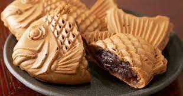

Delicie-se com nosso Mochi Japonês Tradicional, uma sobremesa adorada que derrete na boca e encanta os sentidos. O Mochi é uma iguaria japonesa feita de arroz glutinoso moído a uma textura suave e elástica, que é então moldado em pequenas porções recheadas de sabor.
Nossos Mochis são preparados artesanalmente, oferecendo uma variedade de recheios deliciosos, como pasta de feijão vermelho, morango fresco, matcha (chá verde em pó) e muito mais. Cada mordida revela uma combinação perfeita de textura e sabor, com a maciez do Mochi contrastando com o recheio doce e aromático.
Tempura
Deleite-se com nosso Dorayaki Japonês Tradicional, uma sobremesa icônica que combina sabor e tradição japonesa. O Dorayaki é uma panqueca fofa e dourada recheada com um recheio doce e cremoso, frequentemente feito com creme de feijão vermelho (anko).
Cada Dorayaki é cuidadosamente preparado para alcançar a combinação perfeita de textura e sabor. A panqueca é macia e levemente adocicada, criando uma base ideal para o recheio rico e reconfortante. O recheio de creme de feijão vermelho confere um equilíbrio de sabores, com sua doçura e aroma característicos. O resultado é uma sobremesa que é uma verdadeira celebração da culinária japonesa, oferecendo uma experiência única de sabor e textura.
Taiyaki

Explore os sabores únicos do Japão com o nosso Taiyaki Japonês Recheado, uma sobremesa que é uma verdadeira obra de arte comestível. O Taiyaki é um doce em forma de peixe, que é crocante por fora e macio por dentro, recheado com delícias que vão conquistar seu paladar.
Cada Taiyaki é cuidadosamente preparado para criar uma casquinha dourada e crocante, que contrasta perfeitamente com o recheio macio e saboroso. Os recheios podem variar e incluir opções como creme de feijão doce, chocolate derretido, creme de matcha (chá verde) e muito mais. Cada mordida é uma explosão de sabor e textura, com o equilíbrio perfeito entre doçura e crocância.